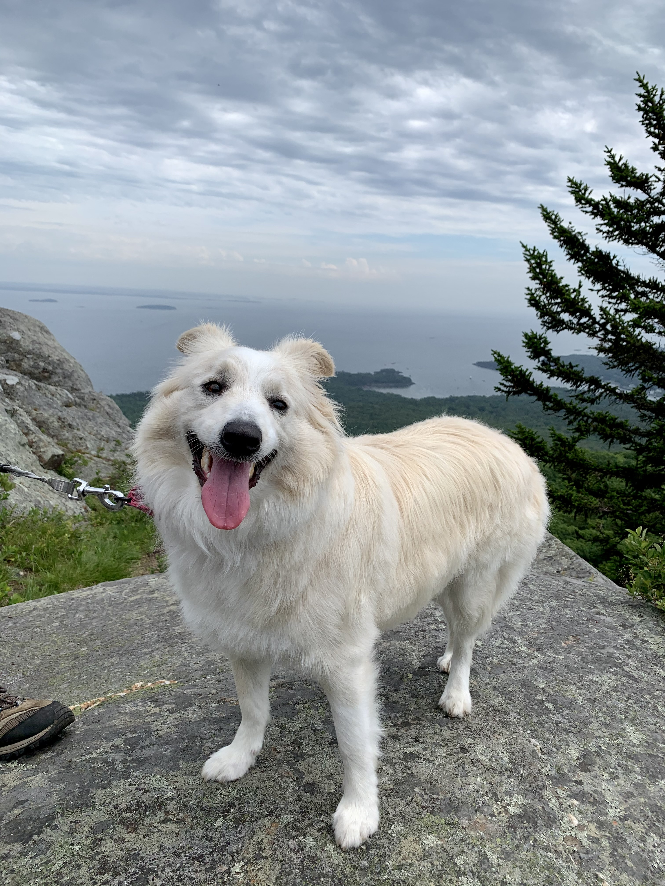

I am a fourth-year student at Northeastern University in Boston, MA, majoring in Business Administration with a concentration in Finance and minoring in Data Science and Economics. One of my interests that I have really developed outside of my academics and extracurriculars is hiking with my dog, Aria. Born in Pennsylvania, Aria is a four-year-old Australian Shepherd that currently lives in Massachusetts with my family. Together, we have hiked and walked through Mount Wachusett, Mount Monadnock, Acadia National Park, the Bruce Freeman Trail, the Blue Hills Reservation, and a lot more. I got into hiking because as the pandemic regulations became less restrictive, I wanted to get outside and explore nature. Thankfully, I had Aria, who was a young puppy then, to motivate me as her breed is highly energetic and needs a lot of exercise anyways. In this way, I feel that Aria has kept me on track. Through hiking, I have also further practiced with my passion in photography as a lot of the hikes offer scenic views of the land below, fun pictures of animals and rock patters, and great shot opportunities of my friends and family. I hope to try hiking in the winter as I feel like that would be new and perhaps refreshing, and Aria loves to play in the snow (and eat it!). The image below is of Aria at Mount Monadnock
